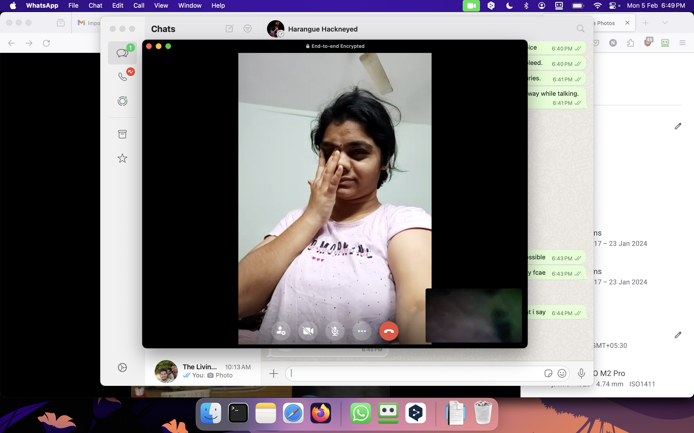

120 seconds left
I wish for you to feel loved and cherished every day, not just on Valentine's Day. ❤
I wish for us to create beautiful memories together, ones that we'll treasure forever. ❤
I wish for us to have the courage to follow our dreams, and the strength to support each other along the way. ❤
I wish for us to have the wisdom to learn from our mistakes, and the grace to forgive each other and ourselves. ❤
I wish for us to have the kindness to show compassion to others, and the compassion to show kindness to ourselves. ❤
there is something hidden here that is
I love you